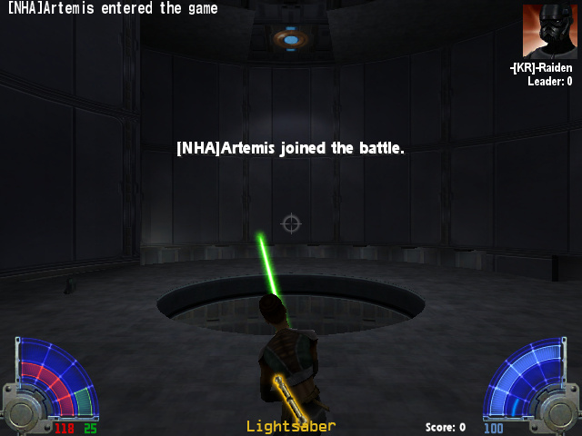

This alliance is a stone laid in the foundation of Everreach. It means the circle no longer turns its back on those who prove themselves.
Ally: -[KR]-Raiden.
Forum // Allies and outsiders
Who we met, and who stood with us. 1 post, oldest first.

This alliance is a stone laid in the foundation of Everreach. It means the circle no longer turns its back on those who prove themselves.
Ally: -[KR]-Raiden.